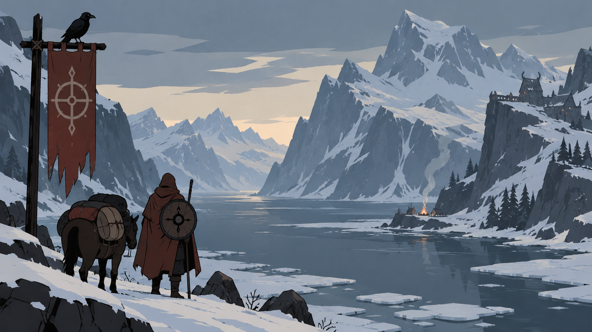

01 · caravan-prep
STYLE SPECIMEN · The Banner Saga (2014)
Frostbound Caravan
Editable primitives for nordic hand-painted travel and war ui; not a finished game screen.

02 · roadside-choice
Road party strip
Road party strip
Three unequal portrait tokens with role, fatigue, and a compact provision count.
STATUS · RECORDED / FICTIONAL03 · camp-trade
Supply ledger
Supply ledger
A paper-and-stitched item line with quantity, scarcity mark, and disabled reason.
No choice committed. Specimen state only.